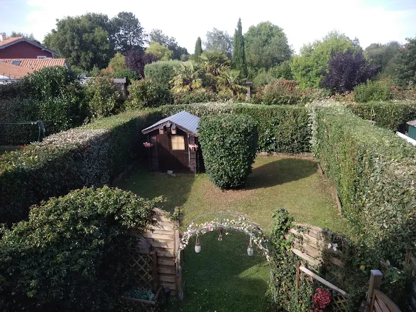

EB SERVICE
Entretien des espaces verts et élagage, au départ de Vertou, pour toute la Loire-Atlantique.
Entretien des espaces verts et élagage, au départ de Vertou, pour toute la Loire-Atlantique.

EB SERVICE est une entreprise d'entretien des espaces verts installée à Vertou, au sud-est de Nantes. Tonte, taille de haies, élagage, débroussaillage, remise en état de terrain : nous prenons en charge l'entretien courant de vos extérieurs, en passage ponctuel comme en contrat à l'année.
Nous travaillons pour des particuliers, des copropriétés et des professionnels. La logique est simple : le même interlocuteur d'un passage à l'autre, du matériel adapté à la configuration du terrain, et un chantier rendu propre — déchets verts évacués compris.
Des passages planifiés à l'avance pour que l'extérieur ne se dégrade jamais.
Un créneau annoncé est un créneau tenu. Vous êtes prévenu en cas d'imprévu météo.
Devis détaillé avant toute intervention, sans frais de déplacement.
Nettoyage systématique en fin de chantier et évacuation des résidus de coupe.
Notre point de départ est le 5bis Rte de Saint-Fiacre à Vertou. Nous rayonnons sur l'ensemble de la Loire-Atlantique — Nantes et sa périphérie sud en priorité, mais nous nous déplaçons plus loin selon la nature du chantier.

« Un extérieur bien tenu, ce n'est pas une question de chance : c'est une question de régularité. »
EB SERVICE — Entretien des espaces vertsDéplacement et devis gratuits. Appelez-nous, on cale une date.
06 63 84 64 05 Demander un devis en ligne